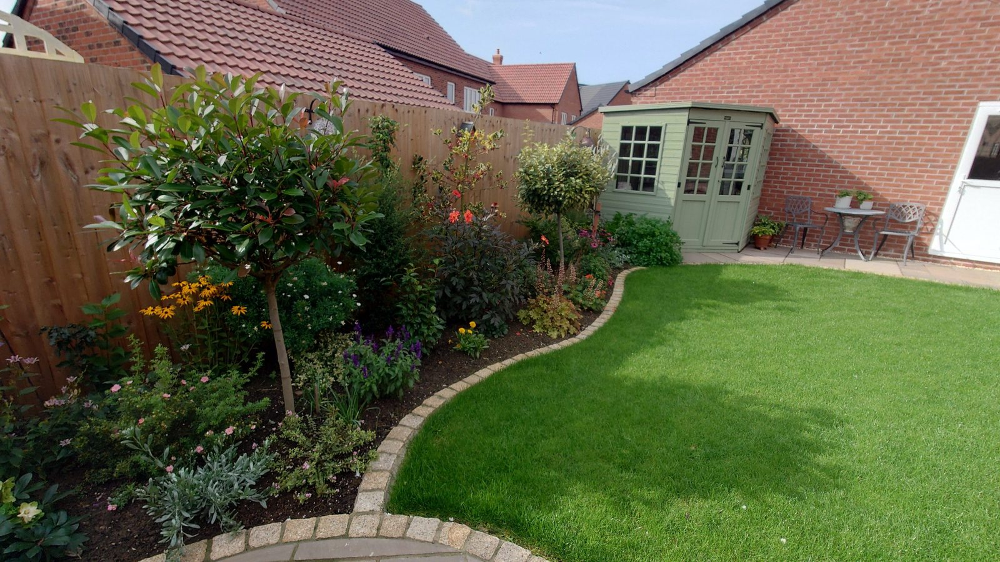

Gardens & landscaping
Lawn mowing, turf supplied and installed, garden clearances, patios and slabbing, and regular maintenance programmes.
- Lawn mowing
- Turf supplied & installed
- Garden clearances
- Patios & slabbing
- Regular maintenance programmes